Cotizaciones
Vuelos:
Costo/Vuelos
Mexico-Cuba
Cuba-Paises bajos
Paises bajos- Grecia
Grecia-Marruecos
Costo
$4283MXN
$5441MXN
$1776MXN
$2100MXN
Total=$13600MXN=$772.51US
Hoteles:
Hoteles/Paises
Amsterdam
Cuba
Marruecos
Grecia
Hoteles
The Bee Hostal 3528 pesos= a 200.91 dólares
Chile habanero 2979 pesos= a 169.65 dólares
Ibis Meknes 2910 pesos a= 165.72 dólares
Evita Athens Asty 5070 pesos a= 188.44 dólares
Total en pesos: $12,726MXN
Total en dólar: $724.72US
Ir a inicio
Investigacion
Cuba
Amsterdam(Holanda):
>Clima:
La temporada templada dura 3.1 meses, del 11 de junio al 13 de septiembre, y la temperatura máxima promedio diaria es más de 19 °C. El mes más cálido del año en Ámsterdam es julio, con una temperatura máxima promedio de 21 °C y mínima de 13 °C.
La temporada fresca dura 3.8 meses, del 20 de noviembre al 13 de marzo, y la temperatura máxima promedio diaria es menos de 9 °C. El mes más frío del año en Ámsterdam es enero, con una temperatura mínima promedio de 1 °C y máxima de 6 °C.
>Flora:
El país es conocido por sus flores, la más conocida de ellas el Tulipán, pero también se pueden ver flores silvestres como las margaritas, los jacintos, las fresias, las begonias, las azucenas o el brezo púrpura que florece entre los brezales en septiembre.
>Fauna:
hay mamíferos como el topillo nórdico, la ardilla roja, los zorros y murciélagos, además de rapaces, como el aguilucho lagunero, y también mariposas. Desde el 2012, incluso se han visto focas comunes
>Urbanización:
1.-Barrio rojo
2.-Jordana
3.-Amsterdam canal ring
4.-Las nueve calles
>Cultura y religión
En Amsterdam el 52% de la población es cristiana (católicos y protestantes) y el 5,3% musulmana. La integración de la creciente población musulmana es uno de los temas más debatidos a nivel político en Holanda.
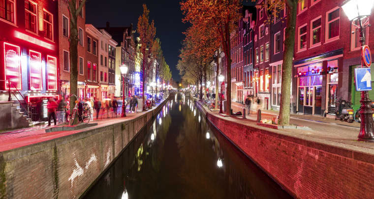
Grecia: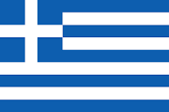
-Grecia es un país del sureste de Europa con miles de islas en los mares egeo y jónico. fue influyente en la antigüedad y, a menudo, se le llama la "cuna de la civilización occidental". Atenas, su capital, conserva monumentos emblemáticos, como la ciudadela de la acrópolis del siglo V a. c.
Población: 10.64 millones (2021)
-Es el país más soleado de Europa. con una media de 250 días de sol cada año
-En terrenos de altura se destaca la presencia de pinos y castaños y en zonas de montaña se pueden encontrar hayas y abetos.
-En cuanto a la fauna, Grecia cuenta con mamíferos, como el oso pardo, el lince, el corzo, el chacal y la cabra salvaje (extinta en el resto de Europa).
-Sus principales artículos son los metales básicos y los productos metálicos, alimentos, bebidas, tabaco, textiles y confección, productos químicos, cemento y vino.
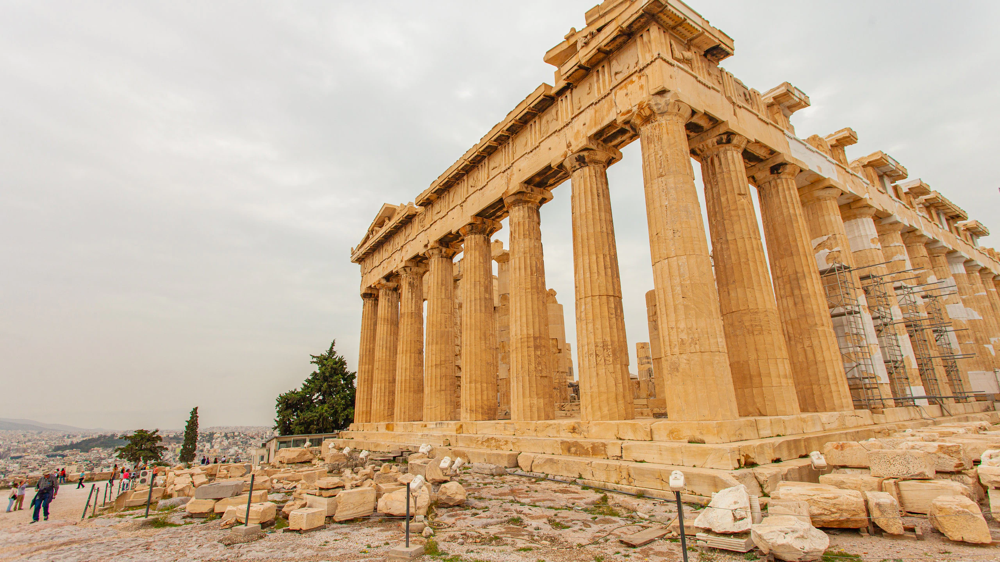
Marruecos:
Clima:
existen dos regiones climáticas semiárido y caluroso a excepción de las partes boscosas son frescas.
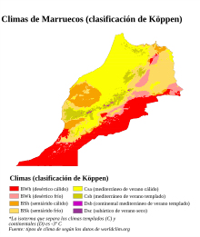
Flora:
Argan
, Cedros
, Encinas
, Arebros
, Enebro
, Sabina
, Alonoque, Encima, Abeto, Palmera.

Urbanizacion:
población urbana fue 63.33 en 2020 su valor mas alto durante los últimos años fue 63.33 su valor mas bajo 29.36 en 1960.
Cultura:
Es influenciada y tiene mezcla de tradiciones étnicas y religiosas del África, Mediterráneo y más. Como este país es considerado su totalidad un país árabe y amazingh es mayor mente 40% árabe, 44%amazingh.

Ir a inicio
Datos
Amsterdam(Holanda):
Producción industrial:
Sus productos más conocidos son las flores, el queso, los tomates, las verduras y hortalizas y la cerveza.
Salario promedio:
El salario médio en Países Bajos en 2022 ha sido de 57.513 € al año, es decir 4.793 euros al mes, si hacemos el cálculo suponiendo 12 pagas anuales. Esto supone que el salario medio ha subido un 2,88% respecto al año anterior, es decir, 1609 euros.

Grecia:
-El sector primario (agricultura) se basa en la producción de trigo, maíz, cebada, remolachas para azúcar, olivas, tomates, vino, tabaco, patatas; carne y productos lácteos.
-El salario mínimo interprofesional para 2023 en Grecia ha quedado fijado en 831,8 € al mes, es decir 9.982 euros al año
-En el año 2021, un 14,7% de la población activa de ese país se encontraba en el paro.
-Grecia con 78 asesinatos en 2020, igual que en 2019, ocupa el puesto 30, en cuanto a tasa de homicidios intencionados (o intencionales por cada cien mil habitantes) de los 176 que publicamos en datosmacro.com.
-La tasa de homicidios en Grecia, que se situó en 2020 en el 0,75 por cada cien mil habitantes, ha subido respecto a 2019, en el que estaba en el 0,74.
-COMER EN UN RESTAURANTE DE COMIDA RÁPIDA, EN
ATENAS POR EJEMPLO, PUEDE COSTARNOS UNOS 7 U 8
EUROS.
-SI QUEREMOS IR A UN RESTAURANTE A LA CARTA DEBEMOS
PREPARAR UN PRESUPUESTO DE UNOS 20 A 30 EUROS POR
PERSONA. PERO SI ESTAMOS EN UNA DE LAS ISLAS, SOBRE
TODO EN MYKONOS O SANTORINI, ESTE PRECIO SE PUEDE
DUPLICAR E INCLUSO TRIPLICAR.
-EN UN RESTAURANTE DE COMIDA CHINA TENDREMOS UN
GASTO MEDIO DE UNOS 20 EUROS POR PERSONA.
-EN UNA PIZZERÍA PODREMOS GASTAR SOBRE LOS 20 EUROS.
-Y EN RESTAURANTES FRANCESES, JAPONESES O ITALIANOS
PODREMOS GASTAR MÁS DE 30 EUROS POR PERSONA.
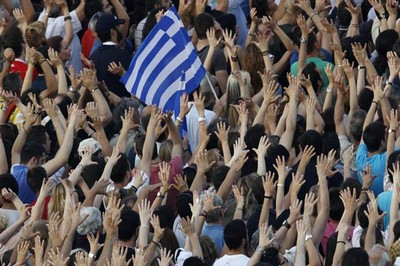
Marruecos:
Marruecos con 458 asesinatos en 2020, 169 menos que en 2019, ocupa el puesto 53, en cuanto a tasa de homicidios intencionados (o intencionales por cada cien mil habitantes) de los 176 que publicamos en Datosmacro.com
Rango de salario (alto)
2019 2.698,8 246,9 €
Rango de salario (medio)
2.970,05 dh (288,35 euros).
Rango de salario (bajo)
15,55 dh el salario/hora (1,51 euros).
Precio de alimentos comunes
el cuscús: 1 paquete x 2.2 libras
mechui de cordero: 14 euros
la bastela: -4 raciones-. 27,50 €.
 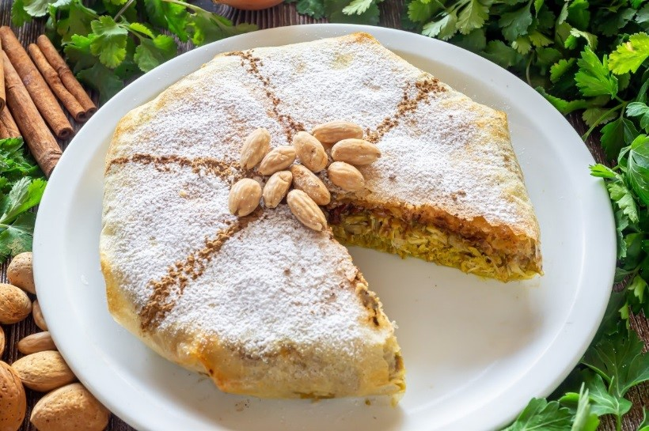
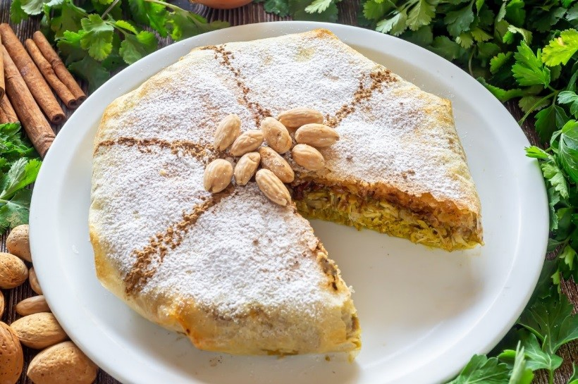
Producción industrial:
Los principales sectores de exportación de Marruecos son, por este orden, la automoción, agroalimentario, fosfatos, textil/cuero. Las principales partidas de importación son bienes de equipo (maquinaria), de consumo (automóviles), pro- ductos energéticos y productos alimentarios (trigo)
En las últimas décadas, Marruecos se ha convertido en el mayor productor y exportador mundial de resina de cáñamo o hachís, proporcionando el 70% del hachís que se consume en Europa y la mitad de la producción mundial.
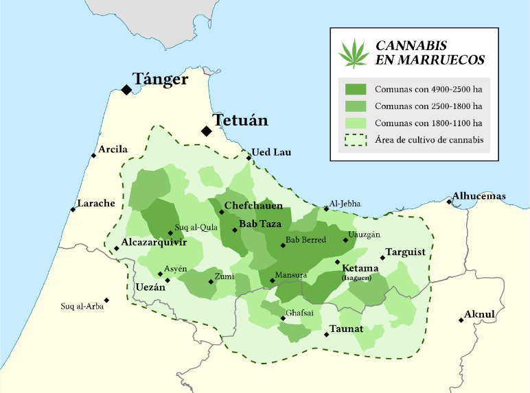
Religion:
El 98.91% de la poblacion practica el islam

Ir a inicio
Vuelos:
| Costo/Vuelos | Mexico-Cuba | Cuba-Paises bajos | Paises bajos- Grecia | Grecia-Marruecos |
|---|---|---|---|---|
| Costo | $4283MXN | $5441MXN | $1776MXN | $2100MXN |
Hoteles:
| Hoteles/Paises | Amsterdam | Cuba | Marruecos | Grecia |
|---|---|---|---|---|
| Hoteles | The Bee Hostal 3528 pesos= a 200.91 dólares | Chile habanero 2979 pesos= a 169.65 dólares | Ibis Meknes 2910 pesos a= 165.72 dólares | Evita Athens Asty 5070 pesos a= 188.44 dólares |
Total en pesos: $12,726MXN
Total en dólar: $724.72US
Ir a inicio
Investigacion
Cuba
Amsterdam(Holanda):
>Clima:
La temporada templada dura 3.1 meses, del 11 de junio al 13 de septiembre, y la temperatura máxima promedio diaria es más de 19 °C. El mes más cálido del año en Ámsterdam es julio, con una temperatura máxima promedio de 21 °C y mínima de 13 °C.
La temporada fresca dura 3.8 meses, del 20 de noviembre al 13 de marzo, y la temperatura máxima promedio diaria es menos de 9 °C. El mes más frío del año en Ámsterdam es enero, con una temperatura mínima promedio de 1 °C y máxima de 6 °C.
>Flora:
El país es conocido por sus flores, la más conocida de ellas el Tulipán, pero también se pueden ver flores silvestres como las margaritas, los jacintos, las fresias, las begonias, las azucenas o el brezo púrpura que florece entre los brezales en septiembre.
>Fauna:
hay mamíferos como el topillo nórdico, la ardilla roja, los zorros y murciélagos, además de rapaces, como el aguilucho lagunero, y también mariposas. Desde el 2012, incluso se han visto focas comunes
>Urbanización:
1.-Barrio rojo
2.-Jordana
3.-Amsterdam canal ring
4.-Las nueve calles
>Cultura y religión
En Amsterdam el 52% de la población es cristiana (católicos y protestantes) y el 5,3% musulmana. La integración de la creciente población musulmana es uno de los temas más debatidos a nivel político en Holanda.
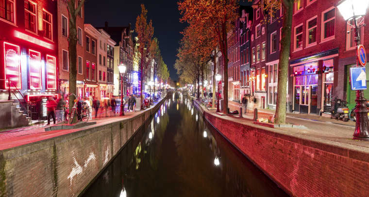
Grecia: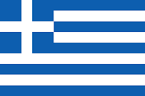
-Grecia es un país del sureste de Europa con miles de islas en los mares egeo y jónico. fue influyente en la antigüedad y, a menudo, se le llama la "cuna de la civilización occidental". Atenas, su capital, conserva monumentos emblemáticos, como la ciudadela de la acrópolis del siglo V a. c.
Población: 10.64 millones (2021)
-Es el país más soleado de Europa. con una media de 250 días de sol cada año
-En terrenos de altura se destaca la presencia de pinos y castaños y en zonas de montaña se pueden encontrar hayas y abetos.
-En cuanto a la fauna, Grecia cuenta con mamíferos, como el oso pardo, el lince, el corzo, el chacal y la cabra salvaje (extinta en el resto de Europa).
-Sus principales artículos son los metales básicos y los productos metálicos, alimentos, bebidas, tabaco, textiles y confección, productos químicos, cemento y vino.
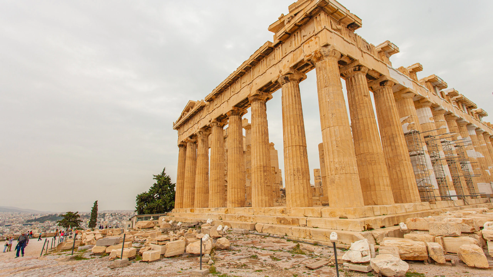
Marruecos:
Clima:
existen dos regiones climáticas semiárido y caluroso a excepción de las partes boscosas son frescas.
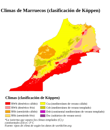
Flora:
Argan
, Cedros
, Encinas
, Arebros
, Enebro
, Sabina
, Alonoque, Encima, Abeto, Palmera.
Urbanizacion:
población urbana fue 63.33 en 2020 su valor mas alto durante los últimos años fue 63.33 su valor mas bajo 29.36 en 1960.
Cultura:
Es influenciada y tiene mezcla de tradiciones étnicas y religiosas del África, Mediterráneo y más. Como este país es considerado su totalidad un país árabe y amazingh es mayor mente 40% árabe, 44%amazingh.
Ir a inicio
La temporada templada dura 3.1 meses, del 11 de junio al 13 de septiembre, y la temperatura máxima promedio diaria es más de 19 °C. El mes más cálido del año en Ámsterdam es julio, con una temperatura máxima promedio de 21 °C y mínima de 13 °C. La temporada fresca dura 3.8 meses, del 20 de noviembre al 13 de marzo, y la temperatura máxima promedio diaria es menos de 9 °C. El mes más frío del año en Ámsterdam es enero, con una temperatura mínima promedio de 1 °C y máxima de 6 °C.
>Flora:
El país es conocido por sus flores, la más conocida de ellas el Tulipán, pero también se pueden ver flores silvestres como las margaritas, los jacintos, las fresias, las begonias, las azucenas o el brezo púrpura que florece entre los brezales en septiembre.
>Fauna:
hay mamíferos como el topillo nórdico, la ardilla roja, los zorros y murciélagos, además de rapaces, como el aguilucho lagunero, y también mariposas. Desde el 2012, incluso se han visto focas comunes
>Urbanización:
1.-Barrio rojo
2.-Jordana
3.-Amsterdam canal ring
4.-Las nueve calles
>Cultura y religión
En Amsterdam el 52% de la población es cristiana (católicos y protestantes) y el 5,3% musulmana. La integración de la creciente población musulmana es uno de los temas más debatidos a nivel político en Holanda.
Grecia: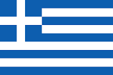
Población: 10.64 millones (2021)
-Es el país más soleado de Europa. con una media de 250 días de sol cada año
-En terrenos de altura se destaca la presencia de pinos y castaños y en zonas de montaña se pueden encontrar hayas y abetos.
-En cuanto a la fauna, Grecia cuenta con mamíferos, como el oso pardo, el lince, el corzo, el chacal y la cabra salvaje (extinta en el resto de Europa).
-Sus principales artículos son los metales básicos y los productos metálicos, alimentos, bebidas, tabaco, textiles y confección, productos químicos, cemento y vino.
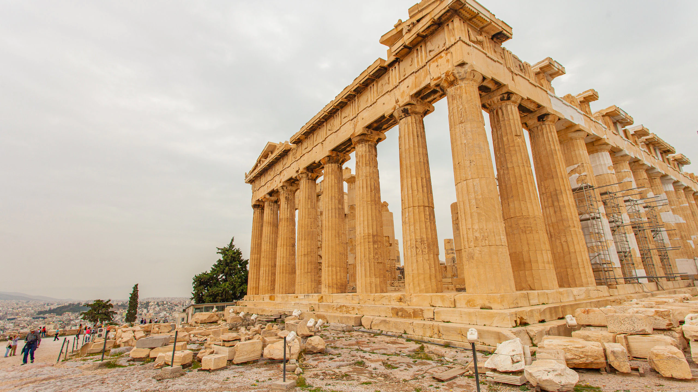